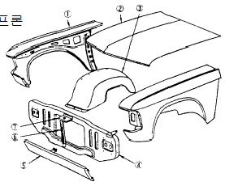
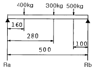
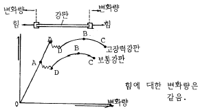
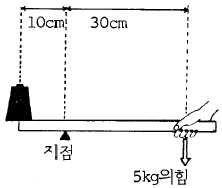
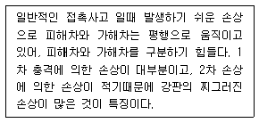

자동차차체수리기능사 (2003-10-05 기출문제)
1과목: 자동차공학
1. 가솔린기관의 연료장치에서 베이퍼록(Vapor lock)이 발생하는 원인은?
- 혼합기가 너무 농후하기 때문에
- ECU(전자제어유닛)의 고장
- 연료관에서 연료가 증기화되기 때문에
- 연료펌프의 코일 단락
(정답률: 66%)

2. 브레이크슈의 리턴스프링의 장력이 낮아지면 휠실린더 내의 잔압은?
- 높아졌다 낮아졌다 한다.
- 낮아진다.
- 일정하다.
- 높아진다.
(정답률: 71%)
3. 다음의 축전기 중 걸리는 전압이 같을 때 전기적 에너지가 가장 큰 것은?
- 100㎌
- 32㎌
- 25㎌
- 5㎌
(정답률: 61%)
4. 1마력은 매초 몇 ㎈의 발열량에 상당하는가?
- 약 176 ㎈/s
- 약 184 ㎈/s
- 약 198 ㎈/s
- 약 201 ㎈/s
(정답률: 70%)
5. 점화플러그의 자기청정온도로 가장 알맞는 것은?
- 250 ~ 300℃
- 450 ~ 800℃
- 850 ~ 950℃
- 1000 ~ 1250℃
(정답률: 62%)
6. 각 실린더의 분사량을 측정하였더니 최대분사량이 66 CC, 최소분사량이 58 CC, 평균분사량이 60 CC 였다면 분사량의 [+]불균율은?
- 10 %
- 15 %
- 20 %
- 30 %
(정답률: 52%)
7. 과급기에 대한 설명 중 틀린 것은?
- 과급기는 기관의 출력을 높이기 위하여 설치한다.
- 배기터빈 과급기가 많이 사용된다.
- 피스톤과 실린더의 마모를 방지하여 수명을 길게 한다.
- 실린더 내에 체적 효율을 높인다.
(정답률: 71%)
8. 전차륜정렬 중 조향 핸들의 조작력을 가볍게 하기 위하여 둔 것은?
- 캠버
- 캐스터
- 토인
- 토아웃
(정답률: 59%)
9. 클러치 압력판의 역할로 다음 중 가장 적당한 것은?
- 기관의 동력을 받아 속도를 조절한다.
- 제동거리를 짧게한다.
- 견인력을 증가시킨다.
- 클러치판을 밀어서 플라이휠에 압착시키는 역할을 한다.
(정답률: 83%)
10. 휠얼라인먼트에서 앞차축과 뒷차축의 평행도에 해당되는 것은?
- 셋백(Set Back)
- 토인(Toe-in)
- KPI(King Pin Inclination)
- SAI(Steering Axis Inclination)
(정답률: 75%)
11. 다음 센서 중 서미스터(Thermistor)에 해당되는 것으로 나열된 것은?
- 냉각수온 센서, 흡기온 센서
- 냉각수온 센서, 산소 센서
- 산소 센서, 스로틀 포지션 센서
- 스로틀 포지션 센서, 크랭크 앵글 센서
(정답률: 57%)
12. 미끄럼제한 브레이크장치(ABS)의 구성품이 아닌 것은?
- 휠(wheel)속도센서
- 모듈레이터유닛트
- 브레이크오일 압력센서
- 어큐뮬레이터
(정답률: 47%)
13. 가솔린 연료분사장치의 연료인젝터는 무엇에 의해서 연료를 분사하는가?
- 로커암의 하강
- 플런저의 상승
- 연료의 규정압력
- 컴퓨터의 분사신호
(정답률: 82%)
14. 토크컨버터 클러치(또는 댐퍼 클러치)의 작동이 가능한 상태는?
- 출발
- 후진
- 중립시
- 고속주행
(정답률: 64%)
15. 전자제어 가솔린 연료분사 장치의 장점이 아닌 것은?
- 엔진의 출력 증대
- 실린더 헤드의 설계 자유도 향상
- 과도응답성 향상
- 시동 · 난기성 향상
(정답률: 59%)
16. 자동차 시동회로에 대한 설명으로 틀린 것은?
- B단자까지의 배선은 굵은 것을 사용해야 한다.
- B단자와 ST단자를 연결해 주는 것은 점화스위치이다.
- 기동전동기의 B단자와 M단자를 연결해 주는 것은 기동전동기 마그네트 스위치이다.
- 축전지 접지가 좋지 않더라도 (+)선의 접촉이 좋으면 기동전동기의 작동에는 지장이 없다.
(정답률: 88%)
17. 다음은 전류의 3대 작용을 설명한 것으로 틀린 것은?
- 전구와 같이 열에너지로 인해 발열하는 작용을 한다.
- 축전지의 전해액과 같이 화학작용에 의해 기전력이 발생한다.
- 코일에 전류가 흐르면 자계가 형성되는 자기작용을 한다.
- 릴레이나 모터의 전류에 따라 홀작용을 한다.
(정답률: 61%)
18. 다음 중 가솔린엔진 오일로 가장 좋은 등급은?
- SC
- SD
- SE
- SG
(정답률: 60%)
19. 타이어 호칭기호 185/70 R 13에서 13이 나타내는 것은?
- 림 직경(인치)
- 타이어 직경(인치)
- 편평비(%)
- 허용하중(kgf)
(정답률: 58%)
20. 중량이 11000 N인 승용자동차를 리프트로 4초만에 1.6 m의 높이로 들어 올렸다. 이 때 리프트의 출력은?
- 4.4 kW
- 4.4 PS
- 44 kW
- 44 PS
(정답률: 36%)
2과목: 자동차차체정비
21. 다음 그림에서 ①번의 명칭은?

- 프런트 펜더 에이프론
- 프런트 펜더
- 후드록 브레이스
- 후드 록웰
(정답률: 67%)
22. 철강은 성분적으로 보아서 그 속에 함유된 무엇의 양에 따라 그 철강의 성질이 좌우되는가?
- 순철
- 선철
- 탄소
- 수소
(정답률: 92%)
23. 다음 질화법에 관한 설명 중 틀린 것은?
- 질화법에 대한 화학 방정식은 NH3 → N + 3H이다.
- 질화강의 탄소 함유량은 0.25 ∼ 0.4%C이다.
- 질화층의 경도를 높이기 위하여 첨가되는 원소는 Al, Cr, Mo 등이 있다.
- 질화법은 재료 중심부의 경화에 그 목적이 있다.
(정답률: 63%)
24. 그림과 같은 양단 지지보의 반력 Ra, Rb는 얼마인가?

- Ra=696kgf, Rb=504kgf
- Ra=383kgf, Rb=289kgf
- Ra=736kgf, Rb=624kgf
- Ra=504kgf, Rb=696kgf
(정답률: 35%)
25. 전기저항 용접법 중 주로 기밀, 수밀, 유밀성을 필요로할 때 가장 적합한 용접은?
- 점용접
- 시임용접
- 플래쉬용접
- 프로젝션용접
(정답률: 51%)
26. 용접기의 1차선에 비하여 2차선을 굵은 선으로 사용하는 이유는?
- 전선의 유연성을 좋게하기 위해서이다.
- 2차 전류가 1차 전류보다 크기 때문이다.
- 2차 전압이 1차 전압보다 높기 때문이다.
- 2차선의 열전도를 보다 크게하기 위해서이다.
(정답률: 70%)
27. 가장 보편적인 도장 방법은?
- 에어 스프레이 도장
- 에어 레스 스프레이 도장
- 정전 스프레이 도장
- 가열 에어 스프레이 도장
(정답률: 96%)
28. 다음은 점용접의 조건을 설명한 것이다. 옳지 않은 것은?
- 보통 점용접에서는 고전압, 소전류의 전원을 저전압, 대전류로 만든다.
- 용접부에서 발생되는 열량은 통전시간에 비례한다.
- 가압력이 너무 세면 용접개시때 발열이 크다.
- 도선의 재료는 전기, 열전도성이 우수하고 충격이나 연속 사용에 견디어야 한다.
(정답률: 36%)
29. 트램트랙킹 게이지로 측정할 수 있는 상태와 위치가 아닌 것은?
- 프론트 사이드멤버의 찌그러진 것이나 굽은 상태의 점검
- 프론트 사이드멤버의 좌우로 굽은 상태
- 로어암과 후드레지의 길이와 굽은 상태의 점검
- 뒷부위 보디의 이그러진 것과 상하굽음의 점검
(정답률: 42%)
30. 그림에서 하항복점은 어디인가?

- A
- B
- C
- D
(정답률: 62%)
31. 승용차의 판넬을 만드는데 주로 쓰이는 냉간 압연강판의 특징이 아닌 것은?
- 표면이 매끄럽다.
- 가공성이 좋다.
- 얇은 판도 만들 수 있다.
- 열간압연 강판에 비해 가격이 싸다.
(정답률: 83%)
32. 다음 그림에서 추에 작용하는 힘의 크기는 몇 kgf 인가?

- 10
- 15
- 20
- 25
(정답률: 61%)
33. 모노코크 차체에서 충돌이 일어나면 그 충돌력이 어떤 모양으로 충돌점에서 퍼져 나가는가?
- 원뿔형
- 사각형
- 원형
- 직선형
(정답률: 78%)
34. 프레임 센터링 게이지를 설치할 때 고려해야 할 사항이 아닌 것은?
- 차체를 네개 부분으로 구분하여 설치한다.
- 센터 사이팅핀을 정확하게 설치한다.
- 크로스 바의 설치 지점을 확인하고 설치한다.
- 기준 참조점에 파손이 없으면 설치하지 않는다.
(정답률: 84%)
35. 차체 판넬이 사고로 인하여 주름 형태로 변형이 되었다. 수정방법이 가장 옳은 것은?
- 판넬을 전후방향으로 당겨 늘리며 남아 있는 변형을 수정한다.
- 들어간 곳 중앙에 많은 워샤를 용식하여 한꺼번에 당긴다.
- 헤머 오프 돌리 후 온돌리 순서로 작업한다.
- 나무해머를 밑에 받치고 전체적으로 해머링한다.
(정답률: 63%)
36. 나사의 표시방법 중 포함되지 않는 것은?
- 나사의 호칭
- 나사의 등급
- 나사산의 감긴 방향
- 나사의 강도
(정답률: 58%)
37. 알루미늄이 자동차에 사용되는 이유 중 틀린 것은?
- 가볍다.
- 열이 전달되기 쉽다.
- 자유로운 형태로 가공이 가능하다.
- 강도가 철보다 강하다.
(정답률: 78%)
38. 디바이더(divider)의 사용 용도가 아닌 것은?
- 원을 그림
- 선의 등분
- 치수를 옳김
- 원의 등분
(정답률: 63%)
39. 다음 중 안전율을 가장 크게 하여야 할 하중은?
- 반복 하중
- 교번 하중
- 충격 하중
- 정 하중
(정답률: 93%)
40. 제도 용지에 직접 작성되거나 컴퓨터로 작성된 최초의 도면으로 트레이스도의 원본이 되는 도면은 무엇인가?
- 배치도
- 스케치도
- 원도
- 기초도
(정답률: 59%)
3과목: 안전관리
41. 프레임과 보디 바닥면을 일체로 한 것이며, 이것은 보디와 조화시켜 큰 상자형 단면을 만든 것으로 보디와 함께 휨 및 구부러짐에 대한 강성이 큰 프레임은?
- 모노코크형 프레임
- 백본형 프레임
- 사다리형 프레임
- 플렛폼형 프레임
(정답률: 37%)
42. 재료에 축방향으로 하중을 가하면 탄성한계 내에서는 세로 변형율과 가로 변형율과의 비율이 일정하다. 이것을 무엇이라고 하는가?
- 안전율
- 전단변형율
- 프와송비
- 후크응력
(정답률: 39%)
43. 차체 손상 진단시 다음 보기와 같은 손상의 형태를 무엇이라 하는가?

- 사이드 데미지 또는 브로드 사이드 데미지
- 사이드 스위핑
- 리어 엔드 데미지
- 롤 오버
(정답률: 73%)
44. 일반 프레임 기준선이 틀린 것은?
- 타이어가 땅에 닿는 면
- 앞 뒤 차축의 중심선(스핀들 높이)
- 리어 범퍼 브라켓 중심을 통한선
- 프레임의 중앙 수평 부분의 윗면
(정답률: 46%)
45. 다음 도료의 건조방법에 속하지 않는 것은 어느 것인가?
- 휘발건조
- 중합건조
- 압축건조
- 산화건조
(정답률: 70%)
46. 사이드보디를 구성하는 부품이 아닌 것은?
- 루프레일
- 센터필러
- 크로스멤버
- 사이드 실
(정답률: 53%)
47. 충격에 의하여 찌그러진 차체 패널을 탈거하기 위한 공구가 아닌 것은?
- 에어치즐
- 에어톱
- 바디화일
- 판금정
(정답률: 55%)
48. 도료의 안료중에 알루미늄의 작은 조각이 첨가된 안료가 있다. 이 안료의 명칭은?
- 마이카 안료
- 메탈릭 안료
- 체질 안료
- 방청 안료
(정답률: 37%)
49. 다음은 산소 봄베에 관한 설명이다. 산소 봄베에 각인된 기호중 T.P라는 기호가 있다. 이 기호가 뜻하는 것은?
- 내압시험압력
- 최고충전압력
- 용기기호
- 용기중량
(정답률: 67%)
50. 도료의 건조방법중 수지분자의 결합이 일어나지 않으며 일반적으로 래커계 도료의 건조 방법은 무엇인가?
- 산화중합건조
- 2액 중합건조
- 용제 증발형 건조
- 열중합건조
(정답률: 57%)
51. 오일의 상태를 살펴 보았더니 흰색이 나타났다. 그 원인은 무엇인가?
- 엔진에서 노킹현상이 심하게 발생되었다.
- 엔진오일에 냉각수가 유입되었다.
- 가솔린이 유입 되었다.
- 심히 오염된 상태로서 교환시기가 지났다.
(정답률: 82%)
52. 휠 평형 잡기와 마멸변형도 검사방법 중 안전수칙에 위배되는 사항은?
- 검사후 테스터 스위치를 끈다음 자연히 정지 하도록 한다.
- 타이어의 회전방향에서 검사한다.
- 과도하게 속도를 내지말고 검사한다.
- 회전하는 휠에 손대지 말고 검사한다.
(정답률: 86%)
53. 60AH의 배터리를 급속 충전할 때 주의사항 중 옳지 못한 것은?
- 충전시간은 가급적 짧아야 한다.
- 충전시간은 24시간 이상이 적당하다.
- 충전 중 전해액의 온도가 45℃가 넘지 않도록 한다.
- 충전전류는 축전지 용량의 1/2 이 좋다.
(정답률: 76%)
54. 마이크로 미터를 보관할 때 주의 사항이 아닌 것은?
- 앤빌과 스핀들은 접촉시켜 놓지 않을 것
- 앤빌과 스핀들은 밀착시킬 것
- 습기가 없는 곳에 보관할 것
- 기름을 주유하여 보관할 것
(정답률: 64%)
55. 전기 용접기를 두어도 무방한 장소는?
- 옥외 비 바람이 치는 장소
- 수증기 또는 습도가 높은 장소
- 먼지가 대단히 많은 장소
- 주위온도가 상온에서 -1℃ 이내의 장소
(정답률: 95%)
56. 카바이트 취급시 주의할 점 중 잘못 설명한 것은?
- 밀봉해서 보관한다.
- 건조한 곳보다 약간 습기가 있는 곳에 보관한다.
- 인화성이 없는 곳에 보관한다.
- 저장소에 전등을 설치할 경우 방폭구조로 한다.
(정답률: 87%)
57. 공동작업으로 물건을 들어 이동하는 방법 중 가장 잘못된 것은?
- 힘의 균형을 유지하여 이동 한다.
- 불안전한 물건은 드는 방법에 주의한다.
- 긴밀히 연락 하면서 조심하여 든다.
- 운반도중 기운 센 사람이 한쪽에 힘을 더 가한다.
(정답률: 90%)
58. 해머사용시 안전사항이 아닌 것은?
- 녹쓴 공작물에는 보호안경을 착용할 것
- 처음에는 힘차게 치고, 나중에는 서서히 칠 것
- 장갑을 끼지 말 것
- 해머를 자루에 꼭 끼울 것
(정답률: 70%)
59. 보호구는 반드시 한국산업안전공단으로 부터 보호구 검정을 받아야 한다. 검정을 받지 않아도 되는 것은?
- 안전모
- 방한복
- 안전장갑
- 보안경
(정답률: 75%)
60. 다음중 압축 공기를 이용한 공구를 사용할 필요가 없는 작업은?
- 타이어 교환 작업
- 클러치 떼어내기와 설치하기
- 축전지 결합 설치
- 엔진 분해 조립
(정답률: 69%)